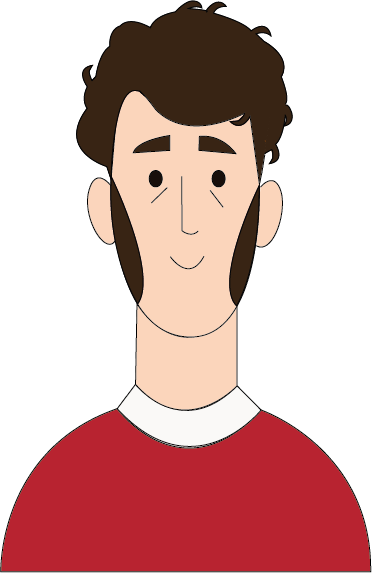

Théodore Géricault


Nascita:
26 Settembre 1791, Rouen, Francia
Morte:
26 Gennaio 1824, Parigi, Francia
Corrente:
Romanticismo



Opere più famose: Corazziere ferito che abbandona il campo di battaglia 1814; La zattera della Medusa 1819
Curiosità: Per realizzare la famosa opera “La zattera della Medusa”, egli si servì dello studio dal vero: intervistò i superstiti riguardo il fatto accaduto e analizzò i corpi deceduti attraverso bisezioni
Citazione: “Se gli ostacoli e le difficoltà scoraggiano un uomo mediocre, al contrario al genio sono necessari, e quasi lo alimentano.”